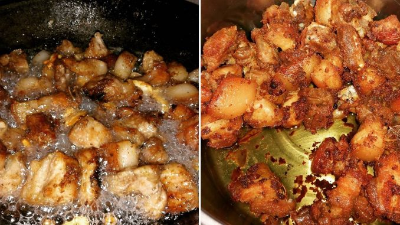

Adobo sa Asin (Adobo with Salt)

Ingredients
- Pork belly Adobo cut or Any pork cut of similar size
- Water
- Red cane vinegar or white vinegar
- garlic
- black pepper
- salt
- bay leaves
- For bonus recipie: Leftover cooked rice
Steps
- Seperate the fat from the pork using a knife. Leave some fat on the muscle, don't cut too close. Set aside the meat and fat in two bowls
- In wok A, boil some water, and add half of the vinegar, half of the garlic, half of the black pepper, half of the salt, and the bay leaves. Do not mix for 5 minutes.
- In a separate wok B, boil some water and add the fat. Boil until the water has evaporated and the fat has rendered
- Add the meat to the boiling water in in wok A
- When the water has almost evaporated from wok A, add the rendered fat from wok B. Continously stir
- When water has completely dried and the meat is sizzling, add half of the garlic, half of the black pepper, and half of the salt. Keep stirring, don't stop
- When the meat has moderately browned, add the rest of the vinegar. Keep stirring, don't stop.
- When the meat has become reddish brown in color, add the rest of the salt, then keep stirring until fried to satisfaction
- Serve immediately
Bonus Recipie: Adobo sa Asin Fried Rice
- Remove pork fat oil from the wok, and set aside. Add about 2 teaspoons of the oil in the wok
- Heat the oil in the wok, then add leftover rice
- Add salt to taste
- Mix and toss the rice while frying. Do not scrape burnt adobo peices from the wok
- Serve and Enjoy!